- 01Introduzione02
- 02Espositori da banco04
- 03Espositori da terra12
Un catalogo illustrativo: le immagini raccontano i progetti.
Per motivi di privacy, alcuni articoli sono stati completamente rigraficati.


Dal progetto alla realizzazione
Tutto parte da un confronto con il cliente: il prodotto, il punto vendita, gli obiettivi. Da qui nasce un’idea, che diventa bozza e poi prototipo da toccare con mano. Quando ogni dettaglio è a posto passiamo alla produzione e seguiamo il progetto fino alla consegna.
Espositori da banco e da terra per ogni esigenza: progettati, prodotti e seguiti internamente.
Schizzo
Disegno tecnico
Prototipo
Produzione

Ufficio tecnico
Studio strutturale, render e tracciati di fustella.

Prototipazione
Campioni bianchi e stampati per testare carico e montaggio.

Produzione
Stampa, fustellatura, incollaggio e confezionamento interni.

Logistica
Spedizione piatta o premontata, in Italia e all’estero.
Un unico interlocutore, dall’idea al punto vendita.

L’espositore da banco lavora dove si decide l’acquisto: accanto alla cassa, sul banco della farmacia, in vetrina. Compatto e leggero, porta il prodotto all’altezza dello sguardo, ordina la gamma in poco spazio e trasforma l’ultimo metro prima del pagamento in comunicazione di marca.
Espositore da banco con scivolo e fondale
- Materiali
- Cartone, cartoncino, forex, plexi, legno
- Montaggio
- Pochi secondi, senza colla
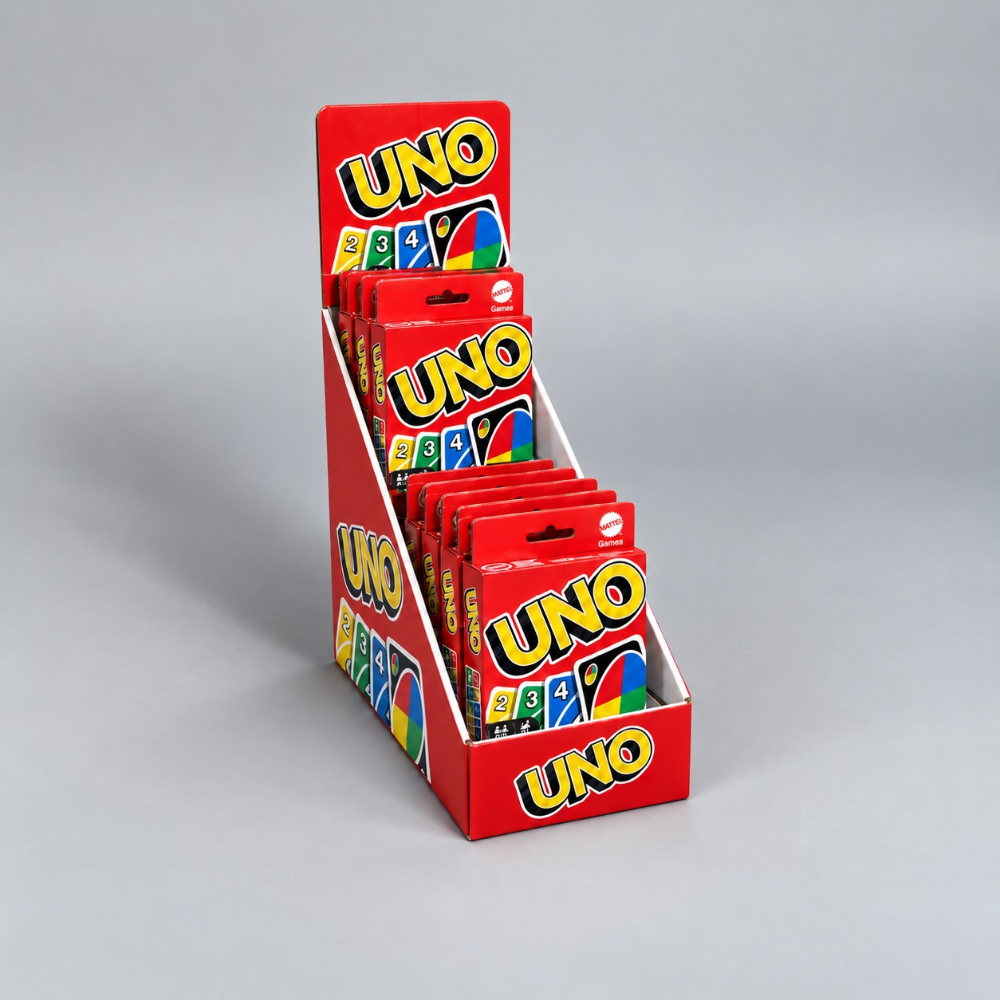
Espositore da banco a gradini

Espositore da banco a 2 gradini sagomati

Espositore da banco a pedana curva con fondale

Espositore da banco a 4 ripiani a sbalzo con fondale

Espositore da banco a fondale con 3 nicchie

Espositore da banco monoprodotto con fondale
Stampa e finiture
Ogni espositore nasce per farsi notare: stampa e nobilitazioni trasformano il cartone in una superficie di marca. Stampiamo in offset e in digitale su cartoncini e ondulati, in quadricromia e a colori Pantone, e completiamo la grafica con lavorazioni che aggiungono luce, profondità e tatto.
- Stampa offset e digitale
- Colori Pantone e metallizzati
- Plastificazione opaca, lucida e soft-touch
- Vernice UV lucida, opaca e selettiva
- UV a spessore ed effetti 3D
- Lamina a caldo e a freddo
- Rilievi e bassorilievi a secco
- Effetti glitter e perlescenti
- Carte speciali, naturali e goffrate
- Accoppiatura su microonda e alveolare
- Finestre in PET e fustellati sagomati
- Grafiche a tutta altezza e a vivo

Espositore da banco a vassoio con fondale

Espositore da banco a vassoio alveolare con fondale

Espositore da banco a gradini inclinati con fondale

- B.11Espositore da banco a pedana con fondale
- B.12Espositore da banco a 2 gradini con header
- B.13Espositore da banco a pedana con gradino ad arco e fondale
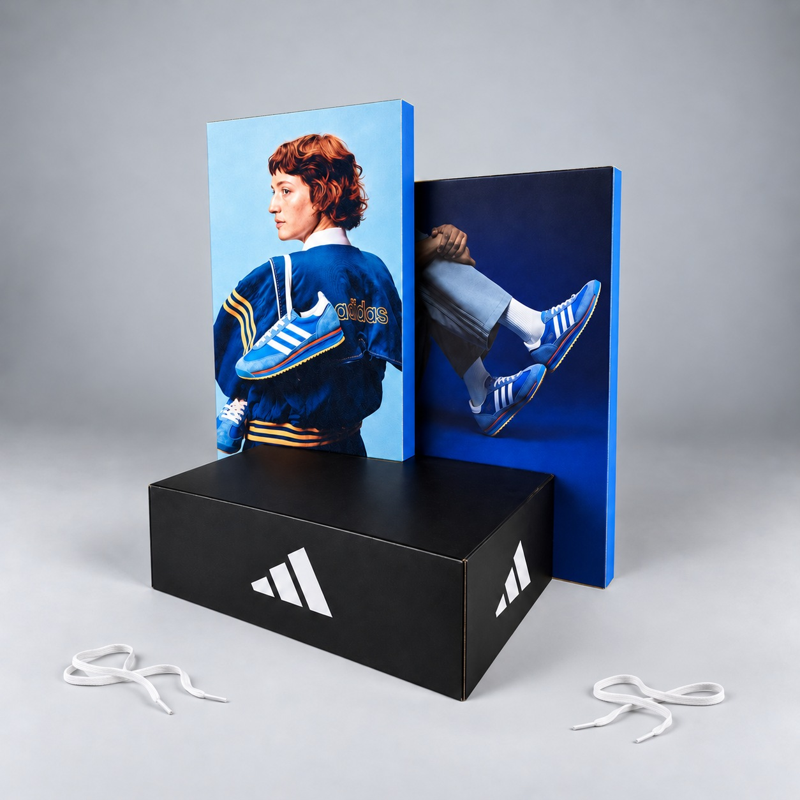
Espositore da banco a box con doppio fondale
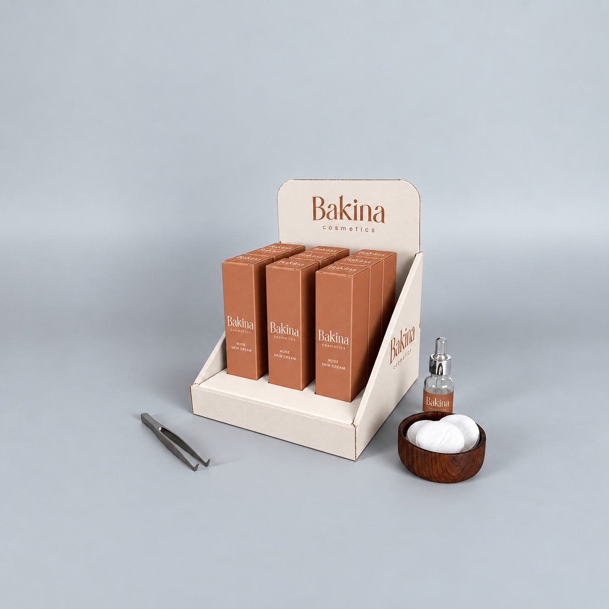


- B.15Espositore da banco con vassoio sagomato
- B.16Espositore da banco a 4 vassoi su 2 livelli con fondale
- B.17Podio in plexiglass


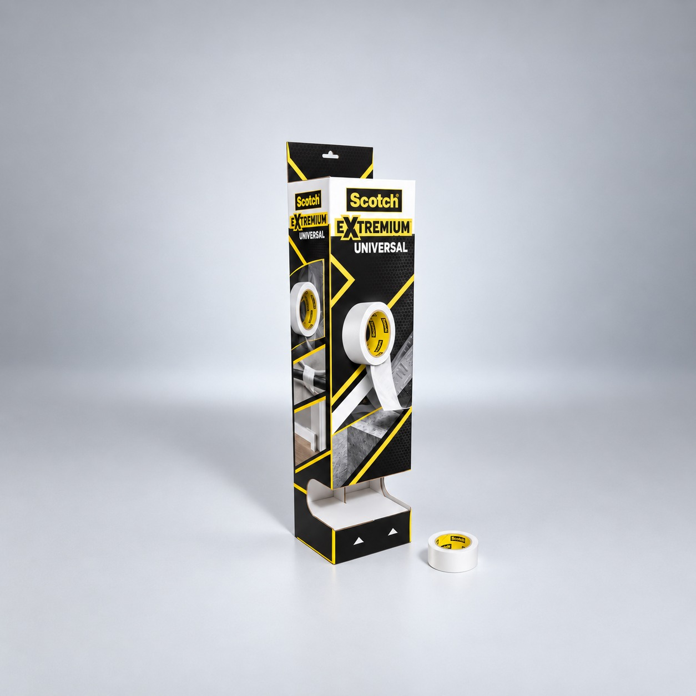
- B.18Espositore da banco a 2 gradini con header ad arco
- B.19Espositore da banco a box con header
- B.20Espositore da banco a colonna con header e vaschetta dispenser

L’espositore da terra crea un punto vendita nel punto vendita: porta il prodotto fuori dallo scaffale, lo rende visibile da lontano e ne racconta la marca su tutta l’altezza. Curiamo ogni dettaglio già in fase di progettazione: ogni espositore è studiato ad hoc, su misura del prodotto e del punto vendita.
- Altezze
- Solitamente da 100 a 200 cm
- Configurazioni
- Ripiani, ganci, vani, podi
- Spedizione
- Piatta, oppure montato e imballato

Configurazioni
Ogni espositore da terra prende forma dal prodotto e dal luogo in cui sarà esposto: monofacciale o bifacciale, a ripiani, a ganci, a vani o a podi. Header e crowner portano il messaggio in alto, visibile da lontano, mentre basi e fianchi rinforzati garantiscono stabilità anche a pieno carico. Anche la logistica fa parte del progetto: l’espositore può viaggiare steso o già montato, con ingombri e imballi studiati sulle misure di magazzini e bancali, EPAL e non solo.
Espositore da terra a 4 ripiani con header
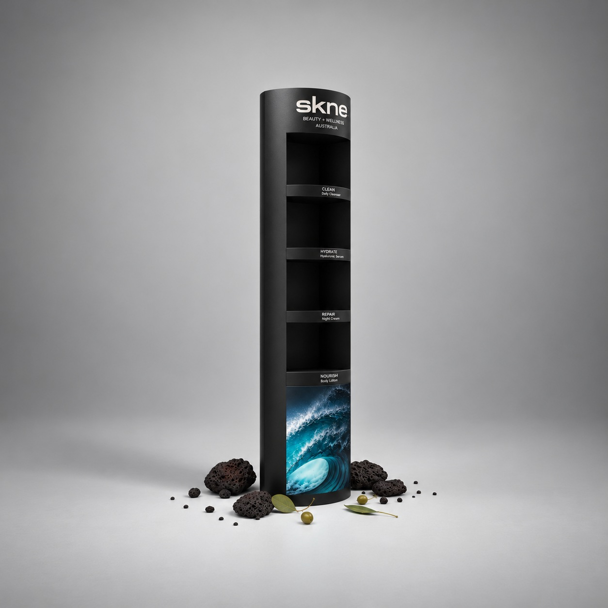

Espositore da terra a totem con 4 nicchie
Espositore da terra a 5 ripiani con fianchi a colonna e header

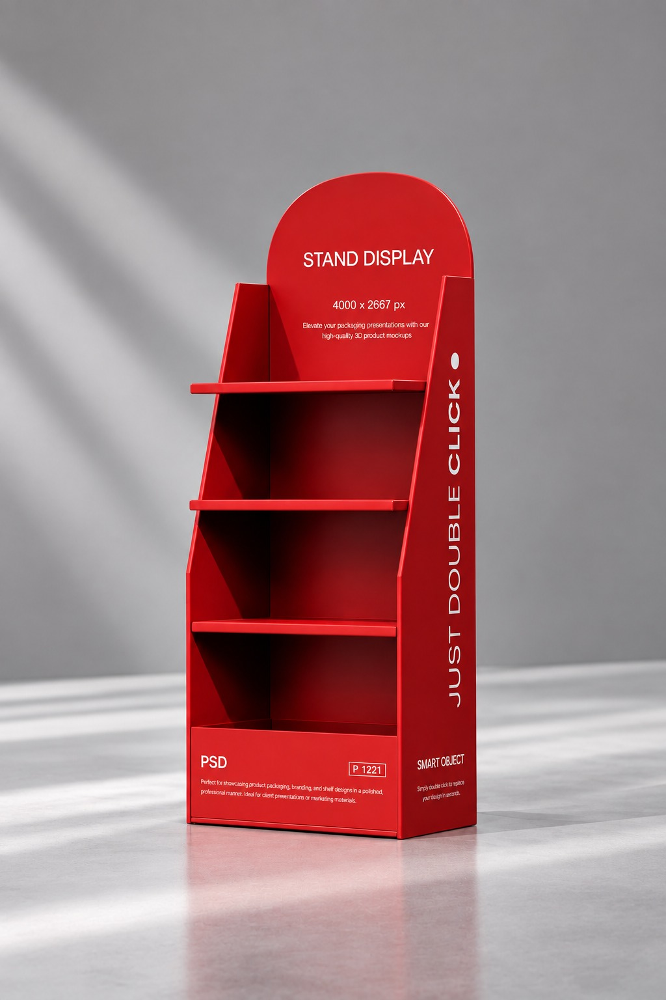
Espositore da terra con nicchie inclinate
Espositore da terra a 3 ripiani con fianchi inclinati e header ad arco


Espositore da terra a 3 ripiani con fianchi
Espositore da terra a podio con fondale
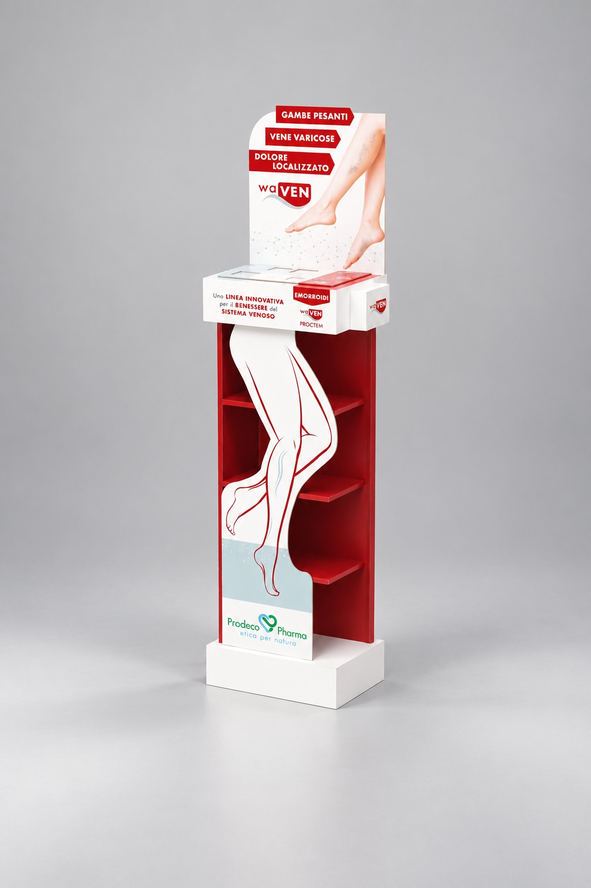
Espositore da terra a 3 ripiani con sagoma frontale, top e base
Espositore da terra a colonna con vano a gradini e header
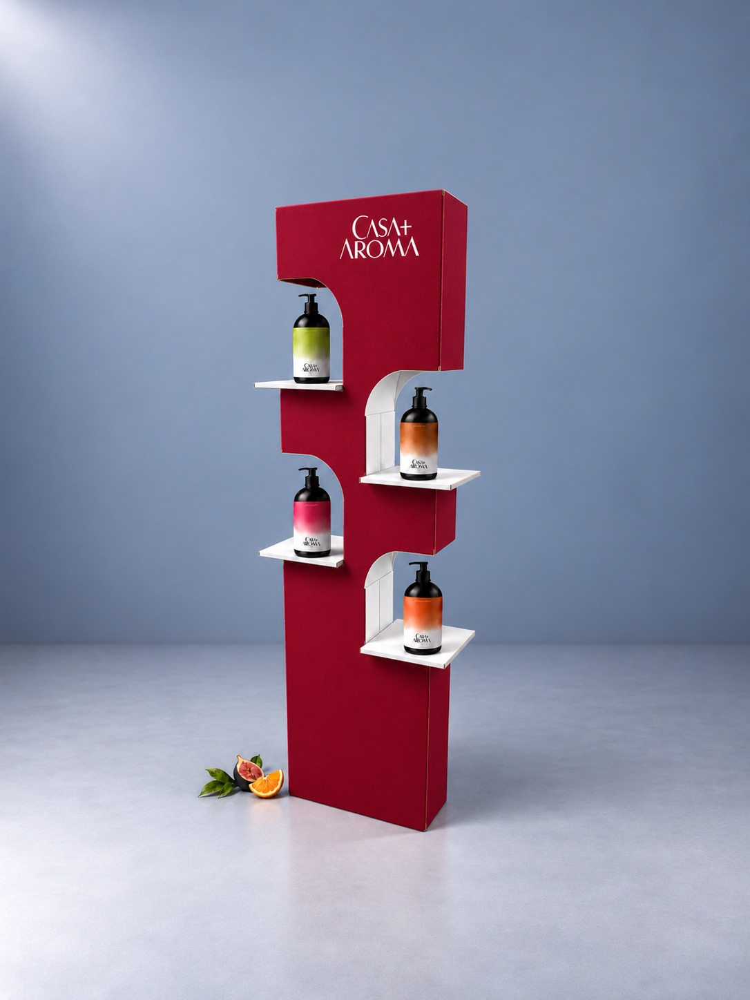
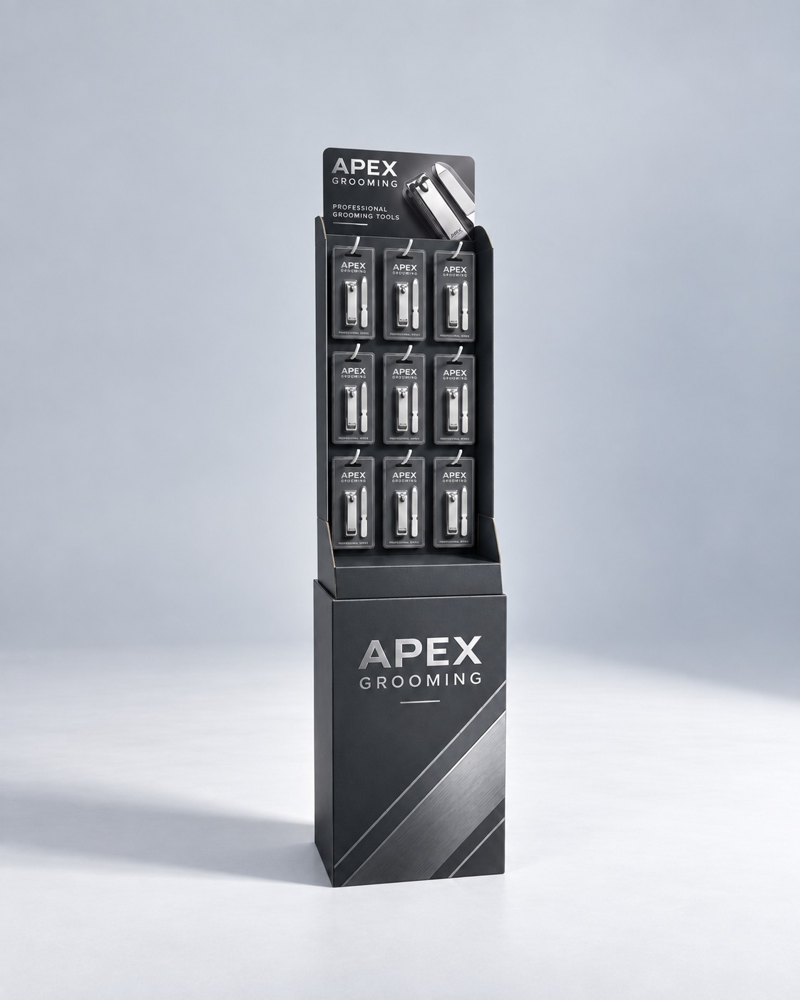
Espositore da terra a colonna sagomata con ripiani a sbalzo
Espositore da terra a ganci con header e base
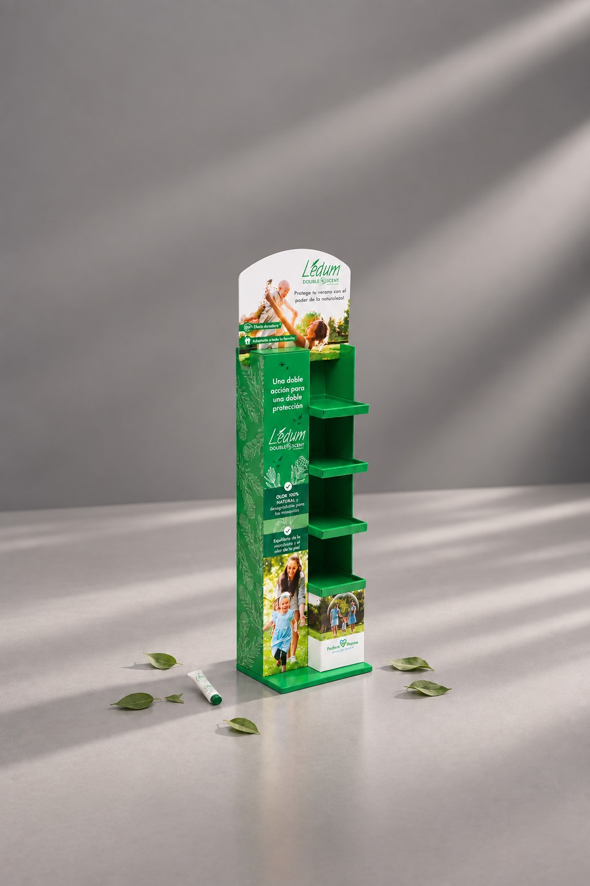
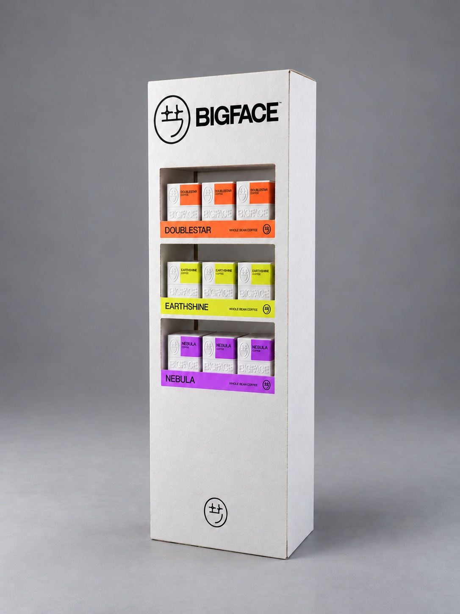
Espositore da terra a colonna con 4 ripiani laterali e header sagomato
Espositore da terra a colonna con 3 vani a vista
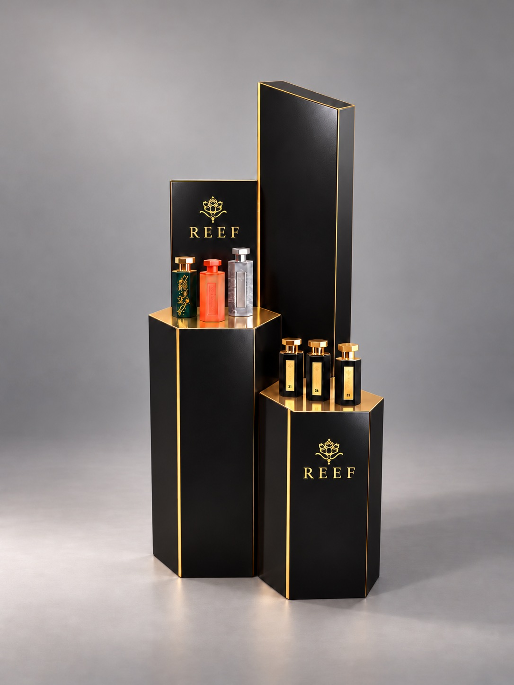
Espositore da terra a podi esagonali con fondali
- Telefono
- 049 630390
- info@onprint.it
- Web
- www.onprint.it
- Indirizzo
- Viale dell’Industria 26, 35030 Rubano (PD)